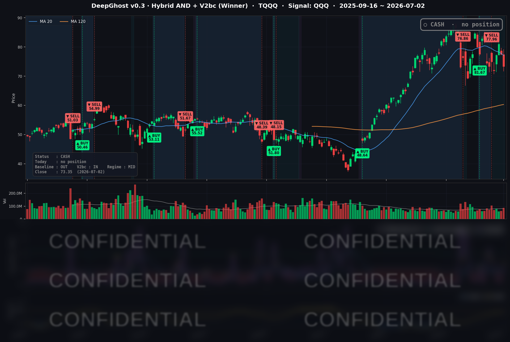

👻 매일 시그널과 히스토리를 홈페이지에서 한눈에 → www.ghostai.co.kr
반도체 섹터 홀로 약세입니다. 이 약세가 나스닥을 끌어내리고 있으나, 거시 리스크는 없습니다. 감정으로부터 오는 직관으로 매매하면 필패 입니다. 정해진 룰대로 매매하면 16년 백테스트 성과를 그대로 얻을 수 있습니다. 생각하지말고 맘편한 투자하시기 바랍니다.
📊 오늘의 매매 신호
| 항목 | 내용 |
|---|---|
| 오늘 할 일 | ✅ 아무것도 안 해도 됩니다 |
| 포지션 상태 | 💵 현금 보유 중 (OUT OF POSITION) |
| 현금 보유 기간 | 2026-06-25 ~ 2026-07-02 (6거래일) |
| TQQQ 종가 | $73.35 (-5.31%) |
6/25 시초가에 TQQQ를 정리해 현금으로 전환한 이후, 새로운 매수·매도 신호 없이 관망을 이어가고 있습니다.
TQQQ 시그널 — OUT OF POSITION
현재 상태: 현금 보유 중 | 신규 매수·매도 신호 없음

오늘은 기술주 진영에 강한 역풍이 분 하루였습니다. 나스닥100을 추종하는 QQQ가 -1.73% 밀렸고, TQQQ는 하루에 -5.31% 하락했습니다. 반도체 장비주와 테슬라·메타가 무너지며 지수 상단을 눌렀는데, 전략은 6/25 이후 현금을 유지하고 있어 이 급락 구간에서 한 발 비켜서 있었습니다.
이틀 연속 현금 보유가 결과적으로 방어로 작동한 셈입니다. 추세가 다시 또렷해지면 모델은 매수 신호를 낼 것입니다. 참고로 방향을 가를 6월 고용보고서는 이날(7/2) 장 시작 전 이미 공개됐는데, 신규고용이 예상을 크게 밑돌며(아래 시황 참조) 노동시장 둔화를 확인했습니다. 다만 7/3은 독립기념일 대체 휴장으로 미국 증시가 쉬어, 다음 거래일은 7/6(월)입니다.
오늘 미국 시장 — 시황 요약
지수 마감
| 지수 | 종가 | 등락률 |
|---|---|---|
| S&P 500 | 7,483.24 | +0.00% |
| 나스닥 종합 | 25,832.67 | -0.80% |
| 다우존스 | 52,900.07 | +1.14% |
| 러셀 2000 | 2,996.11 | -0.55% |
지수 표면은 잔잔했지만 속은 요동친 하루였습니다. S&P 500은 사실상 보합, 다우는 오히려 +1.14% 올라 종가 기준 52,900선까지 닿았습니다. 반면 나스닥(-0.80%)과 QQQ(-1.73%)만 유독 크게 밀렸습니다. 지수 상단을 채운 반도체·성장주가 집중 매도된 반면, 헬스케어·생활필수품·금융이 하방을 방어하면서 "기술주는 팔고 방어주는 사는" 자금 이동이 오늘 장을 지배했습니다. 소형주인 러셀 2000도 -0.55%로 방어주 랠리에 온전히 편승하지는 못했습니다.
국채 금리 동향
| 만기 | 수익률 | 전일 대비 |
|---|---|---|
| 3개월 | 3.67% | -4.2bp |
| 5년 | 4.23% | -1.0bp |
| 10년 | 4.48% | +0.5bp |
| 30년 | 4.98% | +1.5bp |
단기물(3개월)은 4bp 넘게 내리고 장기물(10년·30년)은 소폭 오르면서 곡선이 조금 더 가팔라졌습니다(완만한 베어 스티프닝). 10년물-3개월물 스프레드는 +81.7bp로 정상적인 우상향 곡선을 유지해 경기 침체 신호는 없습니다. 단기 금리 하락에는 이날 장 시작 전 발표된 6월 고용보고서(신규고용 +5.7만 명, 예상 +11.5만 명 대폭 하회)와 예상을 밑돈 ADP 민간고용(+9.8만 명)이, 장기물의 추가 하락 제한에는 워시 의장의 매파성 발언이 반영됐습니다. 다만 전 구간 변화 폭이 ±5bp 이내로 크지 않아, 오늘 기술주 급락의 직접 원인이라기보다는 배경 요인 수준입니다.
연준 발언 & 금리 패스
신임 Warsh 연준 의장이 유럽중앙은행(ECB) 포럼(포르투갈 신트라)에서 발언했습니다. 톤은 중립에서 약간 매파적이었습니다. "물가가 여전히 너무 높다"며 인플레이션 억제가 최우선 목표임을 재확인했고, 7월 회의에 대한 힌트는 거부하며 "약 4주 뒤 데이터를 보고 재평가하겠다"는 데이터 의존 스탠스를 유지했습니다. 동시에 "AI가 물가를 낮출 수 있다"는 공급측 효과에 열린 태도를 보여, 시장은 극단적 매파로 받아들이지 않았습니다. 결국 7월 회의 방향은 데이터에 좌우될 전망인데, 그 핵심인 6월 고용보고서는 이날 장 시작 전 이미 공개됐습니다. 신규고용이 +5.7만 명으로 예상(+11.5만 명)을 크게 밑돌아 고용 둔화를 확인했고, 이는 인하 기대를 자극하는 재료입니다(실업률은 4.2%로 낮아졌지만 구직 활동 인구가 줄어든 영향이 큽니다).
오늘의 핵심 이슈
- 반도체 장비주 밸류에이션 리셋. 상반기 급등했던 칩 장비주가 하루 만에 무너졌습니다(램리서치 -10.19%, KLA -11.51%, 어플라이드 -7.35%). 중국이 이들 매출의 약 34-35%를 차지해 미국 수출통제 리스크가 재부각됐고, 과열됐던 상반기 랠리의 차익실현이 겹쳤습니다. 메모리 대장 마이크론(MU)도 이틀 새 약 -15% 조정됐습니다.
- 테슬라, 역대급 인도량에도 -7.49%. 2분기 48만 대 인도(전년비 +25%, 예상 대폭 상회)라는 기록적 실적에도 주가는 급락했습니다. 발표 직전 나흘간 13% 넘게 오르며 호재가 이미 반영돼 있었고, 시장의 관심이 판매량에서 "대당 마진"으로 옮겨간 결과입니다. 전형적인 재료 소멸(sell-the-news)입니다.
- 자금은 어디로 갔나 — 방어·금융으로의 이동. 기술주에서 빠진 자금이 헬스케어(JNJ +3.57%)·생활필수품(월마트 +2.78%)·결제/금융(비자 +3.15%)·금(+1.7%)으로 옮겨갔습니다. 이 상승이 S&P 500을 보합으로, 다우를 +1.14%로 끌어올렸습니다.
변동성 & 투자심리
- VIX(변동성 지수): 16.15, 전일 대비 -2.65%. 기술주 급락에도 오히려 내렸습니다. 절대 수준이 여전히 낮아 "시장 전체의 공포"는 없었고, 오늘 매도가 패닉이 아니라 섹터 간 자금 재배치였음을 뒷받침합니다.
- 공포탐욕지수: 31(공포). 낮은 VIX와 달리 심리는 방어적으로 기울어 있습니다.
지수 표면은 잔잔하고 VIX도 낮은데(패닉 아님), 그 안에서 반도체는 -7 - -11%로 급락하고 심리지표는 공포에 머물러 있습니다. 어제에 이어 이틀째, "잔잔한 수면 아래 급류"가 흐르는 겉과 속의 온도차가 뚜렷한 국면입니다.
매크로 & 원자재
- WTI 유가: $68.48 (-0.15%) — 거의 보합.
- Brent 유가: $71.54 (-0.04%).
- 금: $4,138.40 (+1.72%) — 안전자산 선호로 강세.
유가는 사실상 제자리에 머물렀고 금은 +1.7% 올랐습니다. 기술주 조정 속에서 자금 일부가 금으로 이동한 흐름으로, 오늘 장의 방어적 성격과 맞물립니다.
주요 종목 동향
| 종목 | 전일 종가 | 당일 종가 | 등락률 | 비고 |
|---|---|---|---|---|
| TSLA | 425.30 | 393.45 | -7.49% | 2분기 48만 대 인도 기록에도 호재 선반영·마진 우려로 재료 소멸, 커버리지 최대 낙폭 |
| MU | 1,032.28 | 975.56 | -5.49% | 실적 랠리 후 차익실현, 메모리 사이클 지속성 논쟁 재점화 (이틀 새 약 -15%) |
| INTC | 127.02 | 120.35 | -5.25% | 칩 섹터 매도 + 밸류에이션 되돌림에 낙폭 상위 |
| META | 612.91 | 582.90 | -4.90% | AI 투자 부담 서사 지속, 대형 성장주 중 낙폭 상위 |
| QCOM | 181.92 | 176.25 | -3.12% | 통신칩 약세, 스마트폰 수요·메모리 원가 우려 |
| AVGO | 369.34 | 360.45 | -2.41% | 반도체 섹터 전반 매도에 동반 약세, 장비주 대비 낙폭 제한 |
| NVDA | 197.58 | 194.83 | -1.39% | 반도체 약세 속 상대적 선방, AI 수요 서사 유지 |
| GOOGL | 361.21 | 359.91 | -0.36% | 성장주 급락 속 방어적 흐름 |
| AMZN | 241.70 | 242.67 | +0.40% | 성장주 약세 속 상대 강세, 견조 |
| MSFT | 384.28 | 390.49 | +1.62% | 클라우드·소프트웨어 프리미엄으로 빅테크 중 강세 |
| NFLX | 74.19 | 77.65 | +4.66% | 콘텐츠·구독 방어주 성격으로 로테이션 수혜, 상승 2위 |
| AAPL | 294.38 | 308.63 | +4.84% | 신규 아이폰 5종·폴더블 로드맵 보도로 상승 주도, 커버리지 상승 1위 |
오늘의 주인공은 반도체 장비주의 급락과 테슬라의 재료 소멸이었습니다. 테슬라(-7.49%)는 역대급 인도량을 발표하고도 급락했고, 마이크론(-5.49%)·인텔(-5.25%)·메타(-4.90%)가 나스닥을 끌어내렸습니다. 반대편에서는 애플(+4.84%)이 신규 아이폰 로드맵 보도로 급등했고, 넷플릭스(+4.66%)·MSFT(+1.62%)가 하방을 방어했습니다. 아마존(+0.40%)과 알파벳(-0.36%)은 성장주 급락 속에서도 상대적으로 잘 버텼습니다. "반도체·일부 대형주는 팔고 방어·소프트웨어는 사는" 자금 이동이 지수 전체의 낙폭을 흡수한 하루였습니다.
Ghost.AI — Quantitative AI Investment
Model: DeepGhost v0.3 | Transformer-Based Deep Learning
Coverage: 13 tickers | Updated every trading day after US market close
⚠️ 본 자료는 정보 제공 목적으로만 작성되었으며 투자 권유가 아닙니다. 모든 투자의 책임은 투자자 본인에게 있습니다. 과거 성과가 미래 수익을 보장하지 않습니다.
[유의사항]
- 본 서비스는 불특정 다수를 대상으로 발행되는 단방향 정보 제공 서비스이며, 투자자 개인의 재산 상황·투자 목적·위험 선호도를 반영한 개별 투자 조언이 아닙니다.
- 고스트에이아이 주식회사는 고객과 쌍방향 의사소통(개별 상담, 맞춤형 자문 등)을 제공하지 않습니다.
- 본 콘텐츠는 투자 권유 또는 매매 주문의 청약·청약의 권유에 해당하지 않으며, 최종 투자 판단 및 그에 따른 손익의 책임은 전적으로 투자자 본인에게 있습니다.
고스트에이아이 주식회사